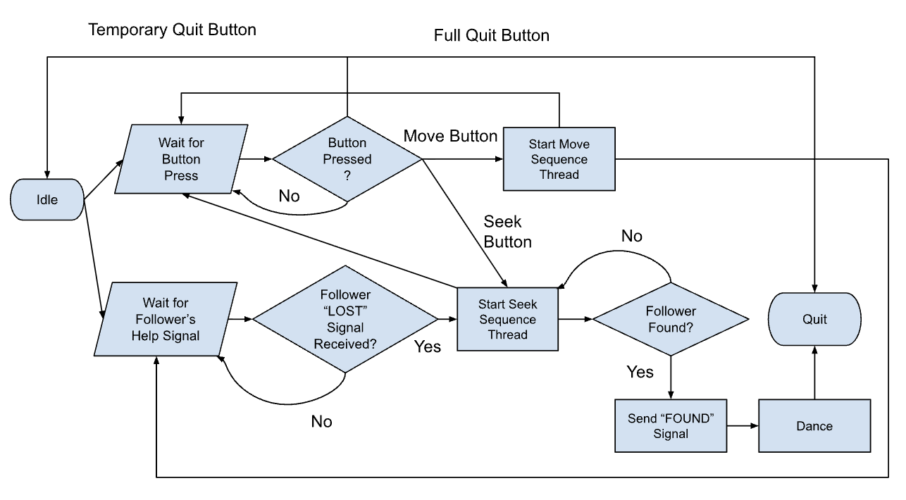
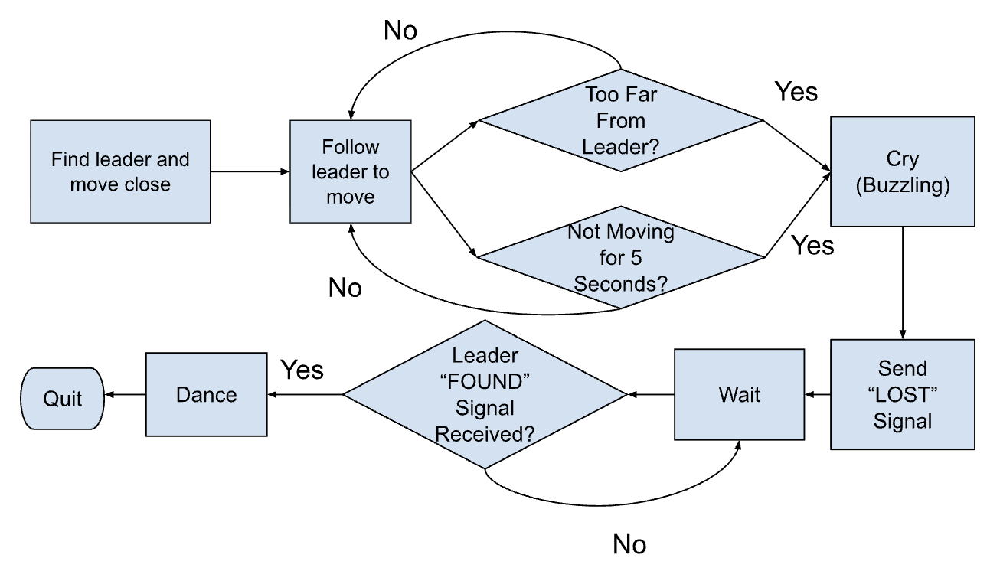
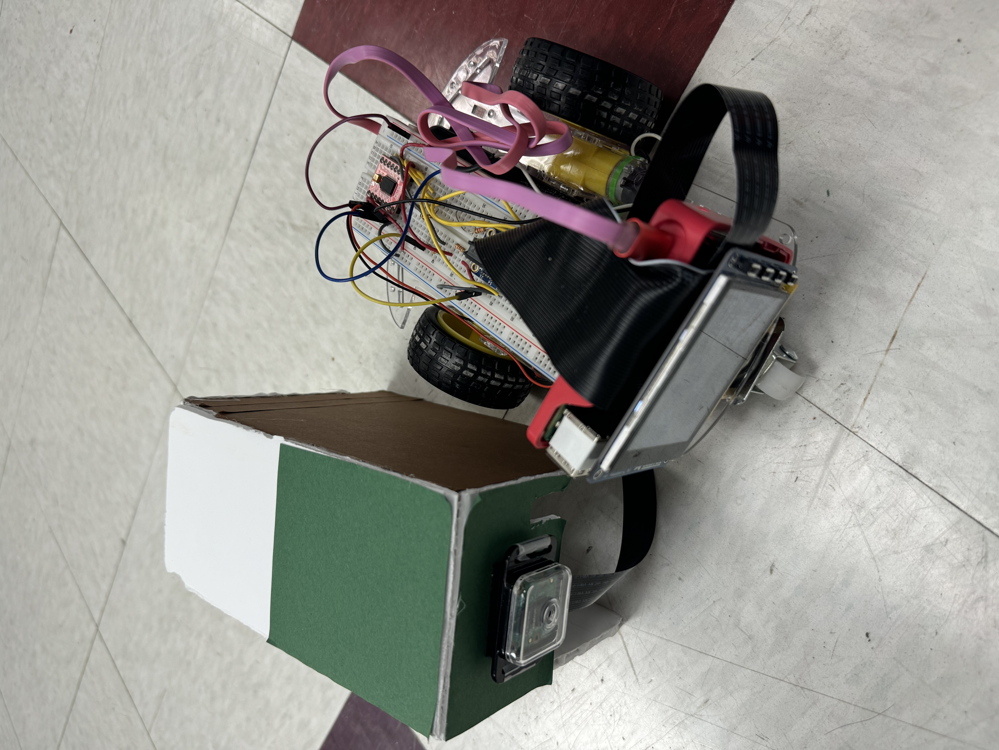
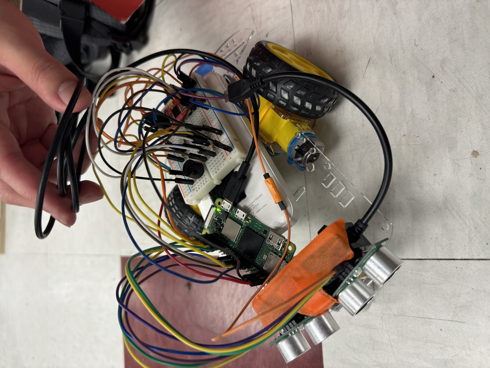

Goose Goose Duck
ECE 5725 Final Project: Wednesday Group 8
Katherine Hsu (kh854) and Bole Ding (bd467)
Date of Submission: 12/12/2025
Introduction
Once upon a time, a baby duckling is following its mother around the ECE 5725 town…but the duckling has a bad sense of direction. For this project, we plan to build two robots, consisting of one leader and one follower, to mimic the behavior of a mother duck and a baby duck.

Project Objective:
Our project features two robots, a leader and a follower, acting as a robotic mother duck🦆 and baby duck🐤. While the mother was moving, the baby carefully followed the mom but sometimes got “lost” and cried dramatically. The mother would then try to find the baby by color recognition with an equipped camera, like a tiny rescue mission. After the reunion, they ended up spinning and dancing happily together. Provide a concise summary (3-4 sentences) of your project's Summarize what you accomplished at a high level.
Video
Include the following placeholder video link on your website: https://www.youtube.com/watch?v=et91Gea6CPk Create a ~2-minute video demonstrating your project and upload it to the Cornell Box folder (https://cornell.box.com/s/0v0wdiky2z7gvs7un9reylqd05eb8mu3). The instructional team will then upload your video to the class YouTube channel and update your website to embed the final version.
Placeholder Video
Design
The follower robot would follow the leader robot around and signal the leader via WiFi if it’s lost. The robot is considered lost if the distance measured is too large or if it’s been staring at a wall for 5 seconds. Once the leader robot receives the LOST signal, it would start seeking for the follower robot and send a FOUND signal upon discovery. Once the two robots are reunited, they would dance.
The leader robot is equipped with a camera and uses the OpenCV library for color detection to seek for the follower robot. For debugging purposes, it also uses the PiTFT screen to display data and four buttons to perform different actions (seek, move, temp quit, full quit). The follower robot is equipped with 2 ultrasonic sensors to measure its distance from the leader robot and follow it around and 1 buzzer for audio cue.
key design iterations and major milestones
Drawings
Leader Robot Logic
Follower Robot Logic
Leader Robot Wiring
Follower Robot Wiring
Two Robots Wiring

write some descriptions for the images? maybe more drawings? or circuit diagrams?
Testing
challenges encountered and how you resolved them? testing procedures and results verifying functionality
Humans life sucks, so does the duck.
Since ducks need big ponds instead of cages, our robot ducks also demanded space, so we ran most experiments in the corridor outside the lab. In this “indoor wetland,” we discovered that other objects often had colors similar to the baby robot, which sometimes confused the mother's color-recognition camera and made her chase the wrong “duck.”
On the software side, the follower Pi Zero behaved like a stubborn duck that refused to wake up. When we used crontab for auto-start, the robot often stayed frozen after reboot, even though the same program worked perfectly when launched manually with a monitor attached. After switching to the second auto-start method from Lab 3 (using .bashrc), startup became much more reliable, and the baby robot finally began to follow its mom automatically after power-on.
Networking added another layer of chaos. The IP addresses of both the mother and baby kept changing. It looked like they were migrating to a new lake every time we rebooted. We had to constantly look up the current IPs and update the program configuration before the two ducks could talk again.
Hardware was not innocent either. Loose power connections meant that the car sometimes stopped or refused to start at all, simply because the wiring between the battery pack / power bank and the Raspberry Pi or motor driver was unstable. We developed the habit of checking and securing all power cables before each test. At the same time, the ultrasonic sensors occasionally returned None, making the baby duck's distance judgment unreliable, so we increased the delay between reading the left and right sensors to get more stable measurements.
Despite all the drama, most system functions eventually worked as intended. The baby normally follows the mom but can accidentally get lost; if it stares at a wall for more than 5 seconds, it sends a LOST signal to the mother. Initially, the baby was also spamming motor data for display on the PiTFT, which delayed LOST detection, but after removing those prints, the mom could recognize the LOST signal within about 1 second on average.
When everything works, the mother calls the baby to dance, the baby receives the command and joins in, and the grown-up baby follows more smoothly while the once-careless mom turns more carefully. The duck family finally passes the test bench and survives another day in this “happy” human-built pond!
Result
evaluate your outcomes, did your project perform as intended? did you meet your original goals and specifications?
In terms of communication, the duck family actually behaves better than most group chats. The bidirectional WiFi link between the leader and follower runs smoothly, with commands and LOST signals exchanged without any noticeable delay. From a system perspective, the network layer is stable and responsive enough that the “conversation” between mother and baby is not the main bottleneck of their behavior.
On the motion and perception side, things are a bit more... bird-brained. The mother's color recognition works reliably, and she can plan a path toward the red-covered baby, but motor inconsistencies and the lack of an object-avoidance system mean her wandering is still clumsy and easily disrupted. The baby moves and measures distance correctly, with ultrasonic sensing behaving as expected, yet its following logic is underpowered: it tends to lose sight of the target and reacts too slowly when turning. In short, the ducks can see and talk just fine, which is a good start. They just haven't fully learned how to walk elegantly together.
Conclusions
key takeaways, what worked well, what did not work as expected
Communication: Bidirectional WiFi communication between the leader and follower robot work nicely without noticeable delay.
Leader Robot: Color recognition works well, and it can plan a path to reach the red covered baby. However, due to motor inconsistencies and a lack of object avoidance system, it still struggles to wander around properly.
Follower Robot: Movement works normally, and ultrasonic distance sensing is accurate, but the following behavior is weak as it often loses the target and turns too slowly.
Future Work
- Auto align/calibrate upon reunited so they can resume the following sequence
- Object avoidance on the leader robot
- More types of commands for the leader robot to send to the follower robot
- Voice commands instead of physical buttons for the leader robot
- Add additional sensors for better following and seeking performances
Work Distribution

Project group picture

Rick
netid@cornell.edu
Designed the overall software architecture (Just being himself).

Morty
netid@cornell.edu
Tested the overall system.
Parts List
- Standard Class Kit: Raspberry Pi 4, PiTFT, Expansion Cable, Robot Kit, Pi Case, 2 SD Cards, Pi Charger, Cables, Breadboard
- Raspberry Pi Zero 2W ($10)
- Raspberry Pi Zero 2W Case ($3, didn't use?)
- Raspberry Pi Camera Module 2 ($15)
- Raspberry Pi Camera Cable ($1)
- Raspberry Pi Camera Case ($1)
- IMU Sensor ($2, didn't use?)
- 2 * Ultrasonic Sensors ($2 each)
- 2 * Buzzers ($0.5 each, only used one?)
- USB Microphone ($2, didn't use?)
- 2 * Robot Kit ($6 each)
- Motor Driver ($7)
- Small Breadboard ($4)
- LEDs, Resistors, Wires, Foam Boards, Power Cables, AA Battery Holders, Batteries, MicroHDMI Adapter - Provided in lab